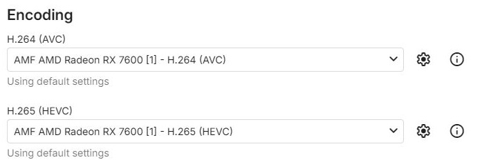
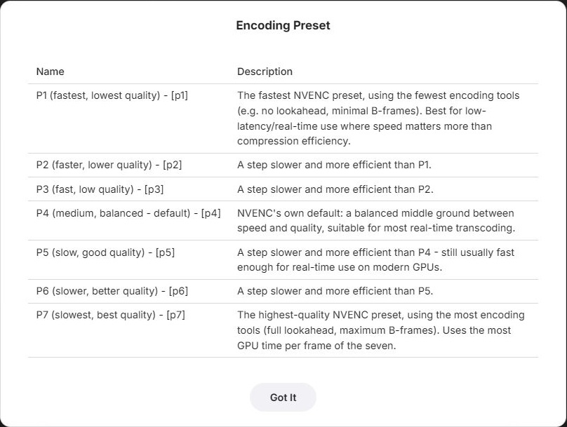
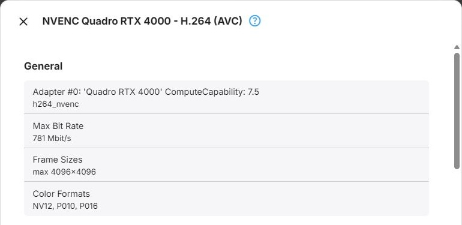

Encoders
Encoder Parameters
Every encoder Emby can use for transcoding has a parameters dialog of its own. The parameters decide how the encoder works: how much time it spends on each frame, how it reaches the bitrate it is given, and which of its own features it uses. They are set per device node and per encoder, and everything you leave alone keeps Emby's default.
Emby sets the target bitrate, the frame rate and the encoding profile of each transcode itself, based on what the client needs. The parameters control how the encoder works within those limits, and Encoding Profile Limit narrows the profile choice.
AV1 encoding is available for media conversions only. Selecting an AV1 encoder here does not make Emby transcode playback to AV1; playback uses other supported output codecs.
Opening the Dialog
The Encoding section of a device's configuration dialog - see Device Configuration and GPU Config - has one dropdown per output codec: H.264 (AVC), H.265 (HEVC) and AV1. Each lists the encoders the device offers, followed by Skip this configuration. The configuration dialog of the software node has the same section for the software encoders - see Software Config.

Two buttons sit beside each dropdown:
- The settings button (gear icon) opens the parameters dialog of the selected encoder. It is disabled for Skip this configuration and for encoders without parameters, such as the Vulkan H.264 encoder
- The info button opens the codec information of the selected encoder
Below the dropdown, a summary shows the state of the selected encoder's parameters: Using default settings while nothing differs from the defaults, or Custom configuration: followed by one line per changed value. Each line names the parameter as the parameters dialog does, followed by its value: the name of the chosen option for a dropdown, ON or OFF for a switch, and the entered value otherwise.
The Parameters Dialog
The dialog is titled with the encoder's name, for example x264 or NVENC <device name> - H.264 (AVC),
and lists the encoder's parameters. Some fields appear only when another field calls for them - for
example, Constant Rate Factor is hidden while Encode in ABR Mode is on - and the dialog updates as
soon as you change such a field. For H.264 and HEVC encoders, the last field is always
Encoding Profile Limit.
- Dropdowns - most choice labels end with the underlying ffmpeg value in square brackets, such as
P4 (medium, balanced - default) - [p4]. The encoder pages quote the labels without that suffix. Plain preset lists, such as x264's, and Encoding Profile Limit show names only. Where the choices have descriptions, the help button beside the dropdown lists every choice with its description - Number fields - accept only values within the range given for them. Where a field may be left empty, an empty field passes nothing to the encoder, so the encoder's own default applies
- Text fields - the software encoders accept additional options in their own
key=valuesyntax

Reset to Default
Reset to Default puts every field of the dialog back to its default value. Like every other change in the dialog, it takes effect when you press Save. Closing the dialog without saving discards all changes.
The device dialog has a Reset to Default button of its own. When the device dialog is saved after using it, all encoder and filter parameters stored for that device node are removed.
Saving
Save stores only the values that differ from the defaults - see Delta Storage. A value set back to its default is removed from storage, so that parameter follows Emby's default again, including when the default changes in a later version.
Parameters are stored per encoder. Selecting a different encoder in the dropdown does not discard them, and they apply again when you switch back.
The parameters belong to the device dialog the parameters dialog was opened from: they are only kept when that dialog is saved as well, and cancelling it discards them together with its other changes. Like every other change, they take effect when the transcoding configuration is saved.
Encoder Pages
- Software - x264, x265 and SVT-AV1, for the Software context type
- Nvidia - NVENC, for Nvidia CUDA
- Quick Sync - Intel Quick Sync, for QSV on D3D11 and QSV on VAAPI
- AMF - AMD AMF, for AMF on D3D11 and AMF on Vulkan
- VAAPI - for VAAPI (Intel) and VAAPI (AMD)
- VideoToolbox - Apple VideoToolbox, for VideoToolbox
- Vulkan - Vulkan Video, for Vulkan (Nvidia), Vulkan (Intel) and Vulkan (AMD)
- Rockchip - RKMPP, for Rockchip
- MediaCodec - Android MediaCodec, for MediaCodec
Encoding Profile Limit
Every H.264 and HEVC encoder has Encoding Profile Limit as the last field of its dialog. AV1 encoders do not have it.
Emby chooses the encoding profile for each transcode automatically: the highest profile that the encoder supports, that the client accepts, and that can carry the bit depth of the output. Encoding Profile Limit caps that choice - profiles above the selected one are not used. Leave it empty (the default) for no limit. This is useful when a client or the encoder has trouble with a profile that would otherwise be chosen.
The dropdown lists the profiles the encoder supports, from lowest to highest: a fixed list for the software encoders, and the profiles detected for the device for hardware encoders.
The limit has two effects:
- Profile choice - the highest qualifying profile at or below the limit is used. The limit does not change the bit depth of the output: if no profile at or below the limit can carry it, the lowest profile that can is used
- Device choice - if every profile that both the client and the encoder support is above the limit, this device node is not used for the transcode, and the next one in the order is tried
Emby does not pass a profile to the VideoToolbox HEVC and MediaCodec HEVC encoders; those choose it themselves. For them, the limit only has the second effect.
Codec Information
The info button beside an encoder in the Encoding section, and beside each decoder in the Decoding
section, opens a read-only overview of what the selected codec reports about itself. It is titled with the
codec's name - for software codecs, with the media type, such as H.264 (AVC). Close closes it.

General lists the following, leaving out anything the codec does not report:
- The device the codec runs on - for hardware codecs, its adapter number, name and driver details -
together with the ffmpeg codec name, such as
h264_nvenc. For software codecs, only the ffmpeg codec name, such aslibx264 - Max Bit Rate - the highest bitrate the codec handles. Where the codec does not report one directly, the highest maximum bitrate among its levels
- Frame Sizes - the smallest and the largest frame size, written as
smallest...largest, ormaxfollowed by the largest size when no minimum is known - Max Instances - how many instances of the codec can run at the same time - see encoder sessions
- Color Formats - the pixel formats the codec works with
Supported Profiles & Levels is shown when the codec reports profiles. It is a table with one row per profile:
- Profile - the profile name
- Max Level - the highest level the codec supports for that profile
- Max Bitrate - the maximum bitrate of that level
- Bit Depths - the bit depths the profile supports
- Resolutions - the range of resolution and frame rate combinations the level allows, each written as
width x height @ frame rate, such as
1920x1080@60
The overview shows what Emby has detected for a device - for example, whether an encoder supports 10-bit output, or up to which resolution a decoder works.
Further Reading
Hardware encoding and software encoding
Overview: Rate control